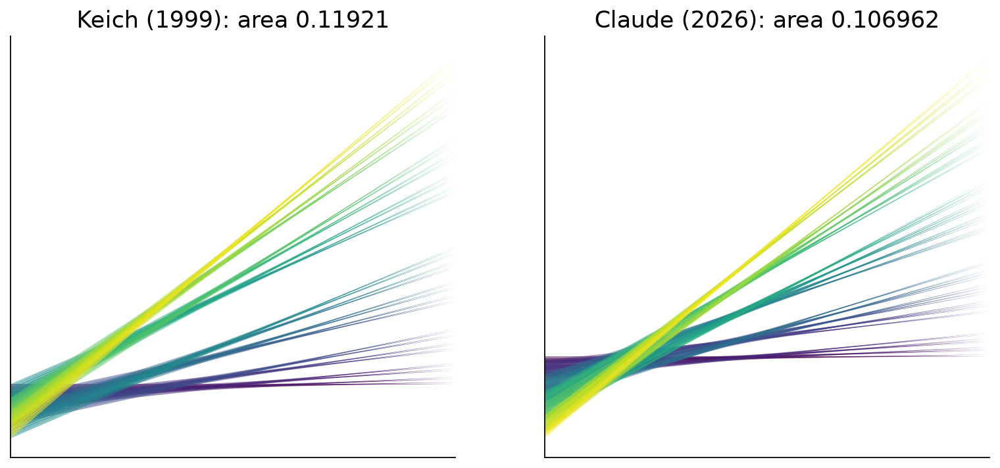
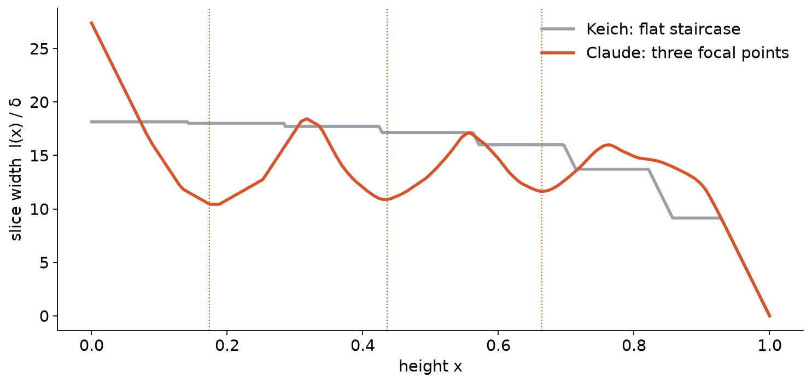

4th Open Scientific Intelligence Hackathon · solo entry
Kakeya Records
Directing an AI agent to new best-known Kakeya constructions:
63 minutes, one 8 GB laptop.
Shrestha Pandey, project lead · research agent: Claude Code (Claude Opus 5.5)
The problem: thin-triangle Kakeya, N = 128
- 128 directions, and one thin triangle per direction containing a unit segment.
- Slide the triangles up or down to make the union as small as possible.
- Keich 1999 → AlphaEvolve 2025 → GPT-5.4 Pro 2026 → Dualverse 2026
- Open problem: the optimum is unknown. It is HorizonMath problem
keich_thin_triangles_128.
New best-known values at every published N
0.106909327
union area at N = 128: 6.88% below AlphaEvolve, 2.05% below GPT-5.4 Pro
| N | AlphaEvolve | GPT-5.4 Pro | Previous best | This work |
|---|
| 32 | 0.141647 | – | 0.138596 | 0.138432 |
| 64 | 0.121735 | – | 0.120901 | 0.120839 |
| 128 | 0.114810 | 0.109148 | 0.107067 | 0.106909327 |
| 256 · 512 · 1024 | – | – | Keich only | 0.095951 · 0.087041 · 0.079662 |
How: four ideas
- Exact slice formula: l(x) = L + Σ min(gap, L). No geometry library, exact gradient.
- Annealed soft-min + Adam to slide through the kinks.
- Lifting lemma: each triangle is exactly two thinner children, so we search coarse-to-fine, N = 8 → 128.
- Memetic islands on a Numba kernel: mutate, descend, migrate.
What it found: focusing, not flattening

Three focal heights where the union collapses

Don't trust us: verify in one minute
- The official HorizonMath validator passes.
- An independent exact rational verifier checks every float exactly across all 32,640 breakpoints.
- An interactive marimo notebook ships with the repository.
python src/verify_exact.py results/n128.json
github.com/shrestha-droid/kakeya-records
Limits and next steps
- These are upper bounds; optimality is open. The margin over the 2026 best is small (0.15%).
- Next: LP-duality lower bounds, and turning the focal structure into an asymptotic family.
One agent on a laptop beat AlphaEvolve in 7 minutes. Thank you!